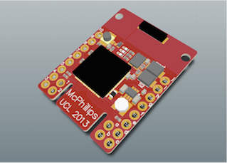
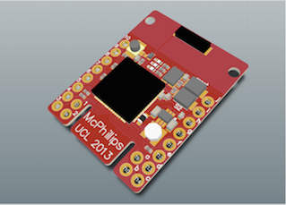

Final Product
Our clients tasked us with developing a smart-parking application, built upon the larger sensor network platform. The application was to indicate the state of street-side parking bays across london - where they were, how long they'd been occupied for, whether it was legal to park there, and more. Since starting the project, we've prototyped various hardare for parking bay monitors and produced a fully functioning web app.
Click here to try our smart-parking app
Of course, a lot of planning and design went into every aspect of this demonstration of the system in use. See below for a detailed analysis of how exactly we did it, and discover how the sensors network streamlines the development process.
Design
- A high-level diagram of the backend design
- Will include talking about the databases
- Brief description of how to achieve it
The custom icons used in our application to indicate the state of a given parking bay.
Hardware
The MC1322x micro-controller

For our project we decided to go with a MC1322x micro-controller. This controller was developed by Freescale as a tool for handling small scale ZigBee communications and sensor control.
The reason for choosing this specific controller was because early research showed that it was compatible with Contiki, which we were planning to use. Our professor Graeme McPhillips created a board around the controller to allow us to access the different ports more easily. The board is shown below:
 

For full documentation on the mc1322x refer to the documentation pdf
For full documentation on the Stamp board refer to the documentation pdf
Contiki
Contiki is the software we used to control the micro-controller. The basic idea of Contiki is to provide a set of libraries to take care of low level control of the microcontroller. It skips the step of configuring every input and output of the device so that we are left with easy to use functions for operating ADC inputs and ZigBee.
For full documentation on Contiki, refer to their website: http://www.contiki-os.org/
Infra-Red
For our project we went with infra-red to determine the state of our parking bay. Infra-Red allows for a low cost, easy to implement way of determining the state of a car simply by reading a distance measurement.
The below sensor is the one we used for our project. It is called the Sharp 2Y0A02 Distance Sensor:


For full documentation on the device refer to the documentation pdf
Control of this device is done via Contiki and the micro-controller, which is shown in our tutorial section.
ZigBee
For our project we went with ZigBee to handle communications between the different sensor units. It does not handle communication with the Arduino, as that is done with a simple serial connection.
We went with ZigBee, because it is designed for low power use cases like ours and the Contiki library allowed for easy implementation of this.
It is the ideal communication protocol for this kind of project, as the range is well within what would be required for parking applications. For use cases unrelated to parking and where distances exceed ~100m per sensor, using other communication devices is recommended.
For our project we went with ZigBee to handle communications between the different sensor units. It does not handle communication with the Arduino, as that is done with a simple serial connection.
For full documentation on ZigBee, refer to the documentation pdf
Arduino
We used the Arduino in our system to act as our zone controller. For the sake of demonstration, we had to handle global communication via a computer due to the service being down for the shield we were planning to use. We used the Arduino Mega along with a Arduino GSM shield:

In a real life implementation of this project, it is recommended to use something smaller than the Arduino, as it draws unnecessary amounts of power. The best thing to do would be to attach a GSM shield directly to your sensor unit, instead of using the Arduino as a medium. For the sake of simplicity we chose to use Arduino.
For more information on Arduino, refer to their website: www.arduino.cc
Using the Java API for analytics
- Details about how the Java API was used to retrieve data
- Details about the analytics performed on the data
- Code samples
Simulating Sensors
- Details about the sensor simulator
- Code samples
- Download link for sample simulator code